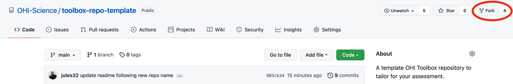
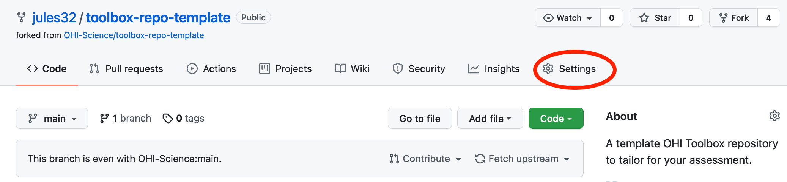

Chapter 5 OHI Toolbox
OHI assessments use our OHI Toolbox software, which helps our work be transparent and reproducible.
The OHI Toolbox is software to calculate OHI scores. You will be able to incorporate your data and models to represent your regions by using the Toolbox.
5.1 The OHI Toolbox and open data science
The OHI Toolbox depends upon the ‘open data science tools’ R, RStudio, Git, and GitHub. They are free to download and use, they are cross-platform (meaning they work on OSX and Windows), and they can be used to help organize, create, reproduce, and communite collaborative analyses. And that’s what OHI is all about! But something important is that these skills are transferrable; they are not only relevant to OHI but will serve you well for your other projects in the future. For more information, see slides from our What is the OHI Toolbox presentation.
Learning the open data science tools (R, RStudio, Git, and GitHub) required for the Toolbox takes time. We have an introduction to open data science training book to teach you the skills you’ll need to use the OHI Toolbox.
5.2 How you will work
Using RStudio and GitHub for analysis also means with can use this collaborative workflow for asking questions and troubleshooting too.
Troubleshooting and asking for help
5.3 Create your OHI Toolbox Repository
As your team gathers data and is ready to prepare it for the Toolbox, you will create your repository on GitHub with the following instructions.
You will need a GitHub username to work in GitHub; create a free account at https://github.com.
5.3.1 Fork the template repository
Navigate to https://github.com/OHI-Science/toolbox-repo-template to find the OHI Toolbox repository template. This is a template repository for Ocean Health Index assessments using the OHI Toolbox. It contains all R code required and templated data for 1 region. (Note, the repo name has been updated and was previously named “ohi-plus-template”).
Fork the repository from the OHI-Science GitHub account into your GitHub account by clicking on the “Fork” button in the top-right of your screen:

After clicking “Fork”, the template repository will be copied into the GitHub account you selected, and changes you make will not affect the original repository in the OHI-Science GitHub account.
5.3.2 Rename your repository
You can now go to the Settings tab to rename the repository to reflect your assessment study area and add collaborators’ GitHub usernames so that they are also able to directly edit the repository.

5.3.3 Clone your repository
You’ll now clone your repository to your local computer using RStudio, which is an integrated development environment where you will develop and run your R code and interface with GitHub. Detailed instructions of how to do this are available in http://ohi-science.org/data-science-training/.
5.3.4 Regions and Assessment Area
One thing to keep in mind as you develop your assessment is how many Regions you have in your Assessment Area. For each data layer that you include in your assessment, you will need to provide data for each Region, ultimately as a row in a .csv file.
The number of Regions are reflected in each data layer; for example, OHI+ Baltic has 42 regions compared template repository that has 1 region. This means that you need to provide data for each Region on its own row in the data layer .csv file, and if you update the data layer filename, you will need to register the new name in layers.csv.
Explore a few previous assessments to see their setup:
- bhi: the Baltic Health Index assessment area has 42 regions
- gye: the Gulf of Guayaquil assessment area has 3 regions
- ohi-northeast: the US Northeast assessment area has 12 regions
You’ll also need to update your regions_list.csv file (located in region/spatial/regions_list.csv). Preparing some spatial files will require spatial analysis, for example using ArcGIS or R (see the sf package for spatial analysis in R).
5.3.5 Ready to start
Now, you’re all set to begin exploring, tailoring, and using the Toolbox. The next chapter will help you get familiar with the OHI Toolbox ecosystem with the “toolbox-demo” repository; you can follow along with the toolbox-demo or with the template repository you have created.